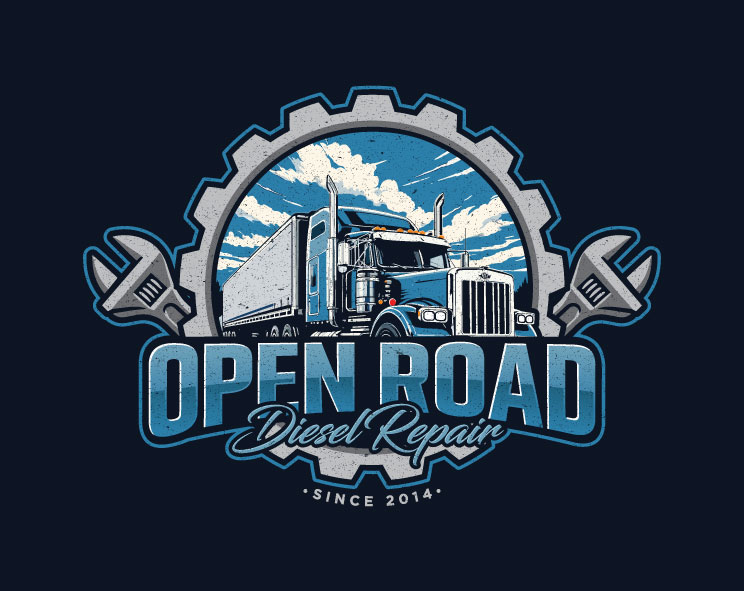

Expert Diesel Engine Repair & Maintenance
View Our ServicesAdvanced computer diagnostics for all diesel engine issues. We identify problems quickly and accurately.
Complete fuel injection system service, injector replacement, and pump repairs for optimal performance.
Expert turbo repair, replacement, and maintenance to maximize your engine's power and efficiency.
Full transmission diagnostics, repair, and rebuild services for all diesel truck models.
Professional oil changes and filter replacements with quality diesel-specific lubricants.
Performance tuning and ECU modifications to enhance horsepower and torque output safely.
Open Road Diesel Repair has been serving the diesel community for over 15 years. Our team of certified diesel mechanics has the expertise to handle any diesel engine problem, from routine maintenance to complex repairs. We specialize in:
We pride ourselves on honest service, competitive pricing, and getting you back on the road quickly.
1500 Industrial Boulevard
Truck City, TX 75001
Monday - Friday: 7:00 AM - 6:00 PM
Saturday: 8:00 AM - 4:00 PM
Sunday: Closed